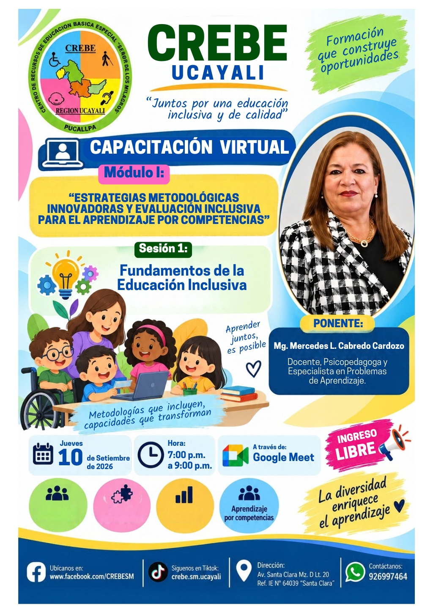
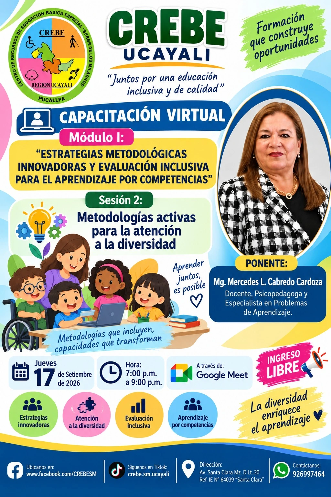
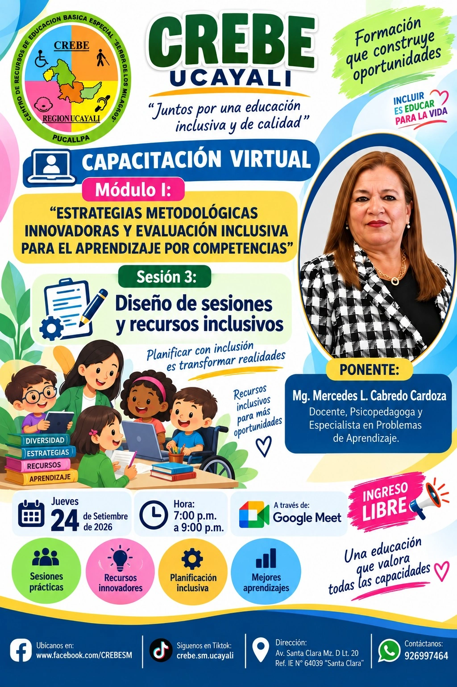

Segunda jornada · Sesión 1 de 10
Jueves 10 de setiembre de 2026
Sesión 1: Fundamentos de la Educación Inclusiva
Los materiales de esta sesión se incorporarán cuando estén disponibles.
Infografía

Abrir infografíaSegunda jornada de capacitación
Diez sesiones programadas cada jueves, del 10 de setiembre al 12 de noviembre de 2026. Las infografías, los PDF y los videos se incorporarán cuando estén disponibles.
Línea de tiempo
Diez sesiones organizadas cronológicamente, cada jueves. Los temas y recursos se publicarán progresivamente.
Segunda jornada · Sesión 1 de 10
Jueves 10 de setiembre de 2026
Los materiales de esta sesión se incorporarán cuando estén disponibles.

Abrir infografíaSegunda jornada · Sesión 2 de 10
Jueves 17 de setiembre de 2026
Los materiales de esta sesión se incorporarán cuando estén disponibles.

Abrir infografíaSegunda jornada · Sesión 3 de 10
Jueves 24 de setiembre de 2026
Diseño de sesiones y recursos inclusivos.

Abrir infografíaSegunda jornada · Sesión 4 de 10
Jueves 01 de octubre de 2026
Los materiales de esta sesión se incorporarán cuando estén disponibles.
Segunda jornada · Sesión 5 de 10
Jueves 08 de octubre de 2026
Los materiales de esta sesión se incorporarán cuando estén disponibles.
Segunda jornada · Sesión 6 de 10
Jueves 15 de octubre de 2026
Los materiales de esta sesión se incorporarán cuando estén disponibles.
Segunda jornada · Sesión 7 de 10
Jueves 22 de octubre de 2026
Los materiales de esta sesión se incorporarán cuando estén disponibles.
Segunda jornada · Sesión 8 de 10
Jueves 29 de octubre de 2026
Los materiales de esta sesión se incorporarán cuando estén disponibles.
Segunda jornada · Sesión 9 de 10
Jueves 05 de noviembre de 2026
Los materiales de esta sesión se incorporarán cuando estén disponibles.
Segunda jornada · Sesión 10 de 10
Jueves 12 de noviembre de 2026
Los materiales de esta sesión se incorporarán cuando estén disponibles.
No se encontraron capacitaciones registradas.